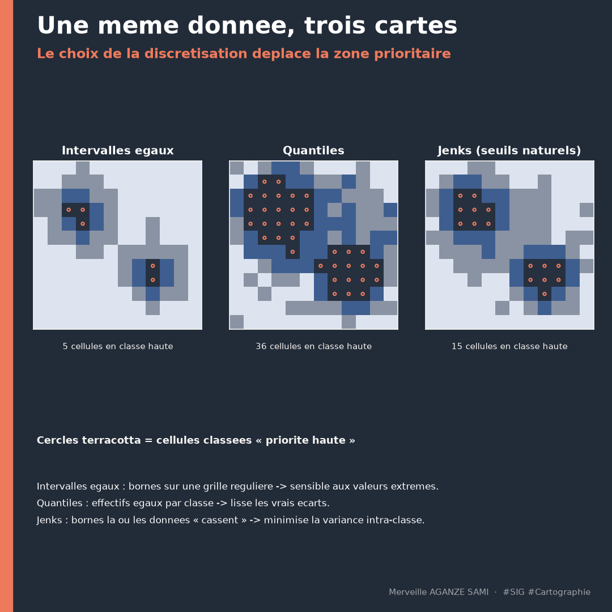

Une carte choroplèthe est fréquemment perçue comme une restitution neutre des données. Elle repose pourtant sur une décision méthodologique prise en amont de tout choix graphique : la manière dont les valeurs continues sont regroupées en classes. Cette opération, appelée discrétisation, détermine largement le message que la carte transmet.
L'exercice est aisé à reproduire. En classant un même indicateur, sur un même fond de carte et avec une même rampe de couleurs, successivement en intervalles égaux, en quantiles, puis par seuils naturels, on obtient trois représentations dont les hiérarchies diffèrent. Une unité classée en catégorie supérieure selon une méthode peut relever de la catégorie médiane selon une autre. Le lecteur, lui, n'a généralement accès à aucune de ces informations.
1. Trois familles de méthodes, trois logiques
Les méthodes de discrétisation les plus employées répondent à des objectifs distincts, ce qui explique qu'aucune ne soit universellement préférable (Slocum et al., 2022).
- Intervalles égaux. L'étendue des valeurs est divisée en classes de même amplitude. La méthode est simple à expliquer et conserve la métrique originale, mais elle produit des classes très inégalement peuplées lorsque la distribution est asymétrique — cas fréquent pour les indicateurs socio-économiques.
- Quantiles. Chaque classe reçoit un effectif identique d'unités. La carte est visuellement équilibrée et se prête aux comparaisons de rang, mais les bornes peuvent séparer des valeurs quasi identiques ou regrouper des valeurs très éloignées.
- Seuils naturels (Jenks). La méthode recherche le découpage minimisant la variance intra-classe et maximisant la variance inter-classe. Elle place les limites aux discontinuités effectives de la distribution (Jenks, 1967).
- Écarts-types. Les bornes se définissent par rapport à la moyenne. Cette approche convient aux distributions symétriques et met en évidence les écarts à la norme plutôt que les niveaux absolus.
L'algorithme sous-jacent aux seuils naturels correspond au partitionnement optimal en une dimension formalisé par Fisher, dont Jenks a proposé l'application cartographique (Fisher, 1958). Sa qualité d'ajustement peut être quantifiée par la fraction de variance expliquée par le découpage, ce qui permet une comparaison objective entre nombres de classes.
2. Ce que le choix modifie concrètement
L'effet de la discrétisation ne se limite pas à l'esthétique. Il porte sur trois dimensions de l'usage d'une carte.
La priorisation d'abord : lorsqu'une carte sert à désigner des zones d'intervention, le passage d'une méthode à l'autre déplace la frontière entre catégories et modifie donc la liste des unités retenues. La comparabilité ensuite : deux cartes produites à des dates différentes avec des bornes recalculées ne sont pas comparables, puisque la même couleur ne recouvre plus les mêmes valeurs. La perception enfin : les travaux sur la lecture des cartes montrent que le nombre de classes et le contraste des teintes influencent l'estimation des valeurs par le lecteur (Brewer & Pickle, 2002).
Cas particulier des taux. Cartographier des effectifs bruts en choroplèthe induit une lecture erronée, la surface des unités étant confondue avec l'intensité du phénomène. Les valeurs doivent être normalisées — par la population, la superficie ou une autre grandeur de référence — avant toute discrétisation.
3. Une règle de restitution
La difficulté principale n'est pas de choisir une méthode, mais de laisser ce choix implicite. Une carte destinée à une décision ou à un rapport devrait indiquer, dans sa légende ou sa note de méthode, quatre éléments : la méthode de discrétisation retenue, le nombre de classes, les bornes effectives, et la variable de normalisation lorsqu'il s'agit d'un taux.
Cette documentation présente deux avantages pratiques. Elle rend la carte reproductible, donc vérifiable. Et elle prépare la réponse à la question que pose tôt ou tard un partenaire ou un bailleur : sur quelle base ce seuil a-t-il été fixé ?
4. Recommandations d'usage
- Pour une série temporelle ou une comparaison entre territoires, fixer les bornes une fois pour toutes et les conserver, quitte à perdre en finesse sur chaque carte prise isolément.
- Pour une exploration d'un jeu de données nouveau, les seuils naturels révèlent efficacement la structure de la distribution.
- Pour une carte de rang ou de priorisation relative, les quantiles restent lisibles et faciles à justifier.
- Limiter le nombre de classes à cinq ou sept : au-delà, la discrimination visuelle des teintes devient peu fiable.
- Examiner systématiquement l'histogramme de la variable avant de choisir : la forme de la distribution oriente le choix mieux qu'une règle générale.
Points essentiels
- La discrétisation est une décision méthodologique, prise avant tout choix graphique
- Intervalles égaux, quantiles et seuils naturels répondent à des objectifs différents
- La méthode retenue modifie la liste des zones classées prioritaires
- Des bornes recalculées à chaque édition rendent les cartes non comparables dans le temps
- Méthode, nombre de classes, bornes et normalisation doivent figurer dans la restitution
Une carte ne déforme pas les données. Mais le découpage en classes, lorsqu'il reste implicite, oriente la lecture sans que le lecteur puisse en juger.
Références
- Brewer, C. A., & Pickle, L. (2002). Evaluation of Methods for Classifying Epidemiological Data on Choropleth Maps in Series. Annals of the Association of American Geographers, 92(4), 662–681. doi.org/10.1111/1467-8306.00310
- Fisher, W. D. (1958). On Grouping for Maximum Homogeneity. Journal of the American Statistical Association, 53(284), 789–798. doi.org/10.1080/01621459.1958.10501479
- Jenks, G. F. (1967). The Data Model Concept in Statistical Mapping. International Yearbook of Cartography, 7, 186–190.
- Slocum, T. A., McMaster, R. B., Kessler, F. C., & Howard, H. H. (2022). Thematic Cartography and Geovisualization (4th ed.). Boca Raton: CRC Press. doi.org/10.1201/9781003150527

Merveille Aganze Sami
Conseillère MEL & Gestion de Bases de Données. Plus de 9 ans d'expérience en suivi-évaluation, SIG et digitalisation auprès d'organisations internationales (GIZ, Enabel) en RD Congo.
Des cartes de priorisation à rendre défendables ?
Prendre contact